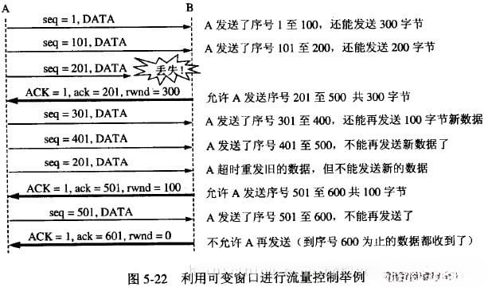

传输层分为两个协议UDP和TCP，UDP是一个不可靠的协议，也就是说他仅仅提供复用和分用的功能但是对于比特差错或者丢弃不做任何处理。
TCP提供一种面向连接的、可靠的字节流服务，发送方发送的数据到达接收方的时候不会发生错误，不会丢失，不会乱序。
面向连接：意味着两个使用TCP的应用（通常是一个客户和一个服务器）在彼此交换数据之前必须先建立一个TCP连接。在一个TCP连接中，仅有两方进行彼此通信。广播和多播不能用于TCP。
通过三次握手建立可靠地通信连接
应用数据被分割成TCP认为最适合发送的数据块,即将数据截断为合理的长度。这和UDP完全不同，应用程序产生的数据报长度将保持不变。
当TCP发出一个段后，它启动一个定时器，等待目的端确认收到这个报文段。如果不能及时收到一个确认，将重发这个报文段。
当TCP收到发自TCP连接另一端的数据，它将发送一个确认响应。这个确认不是立即发送，通常将推迟几分之一秒，对包做完整校验。
也就是引入校验和。在TCP的首部中有一个占据16为的空间用来放置校验和的结果。在源主机的运输层开始接受到一个从应用进程传下来的数据的时候，会将他封装成一个报文段，加上至少20字节的首部。同时会将这个报文段首部和数据还有伪首部部分一起根据取反码和的形式计算出校验和添加到首部中。传输到目的主机的运输层之后，会计算这个通过这个校验和检查是否存在比特差错。这是一个端到端的检验和，目的是检测数据在传输过程中的任何变化。如果收到段的检验和有差错，TCP将丢弃这个报文段和不确认收到此报文段。校验出包有错，丢弃报文段，不给出响应，TCP发送数据端，超时时会重发数据。
既然TCP报文段作为IP数据报来传输，而IP数据报的到达可能会失序，因此TCP报文段的到达也可能会失序。如果必要，TCP将对收到的数据进行重新排序，将收到的数据以正确的顺序交给应用层。
既然IP数据报会发生重复，TCP的接收端必须丢弃重复的数据。

TCP还能提供流量控制。TCP连接的每一方都有固定大小的缓冲空间。TCP的接收端只允许另一端发送接收端缓冲区所能接纳的数据。这将防止较快主机致使较慢主机的缓冲区溢出。TCP使用的流量控制协议是可变大小的滑动窗口协议。
字节流服务：两个应用程序通过TCP连接交换8bit字节构成的字节流。TCP不在字节流中插入记录标识符。我们将这称为字节流服务（bytestreamservice）。
TCP对字节流的内容不作任何解释:TCP对字节流的内容不作任何解释。TCP不知道传输的数据字节流是二进制数据，还是ASCII字符、EBCDIC字符或者其他类型数据。对字节流的解释由TCP连接双方的应用层解释。